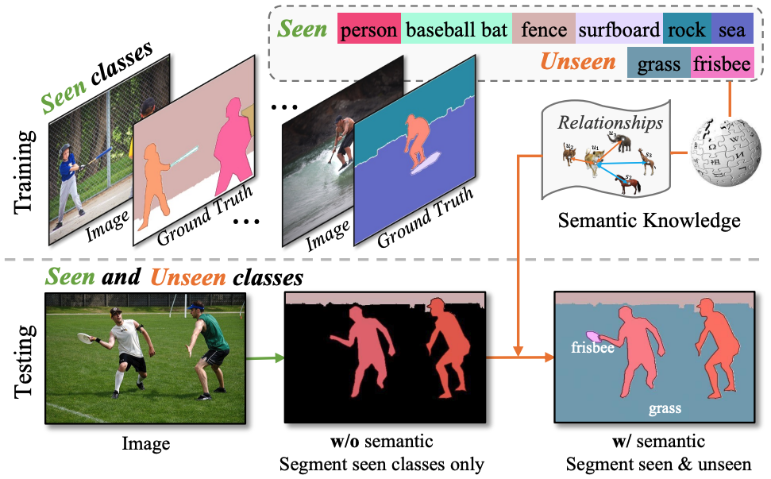
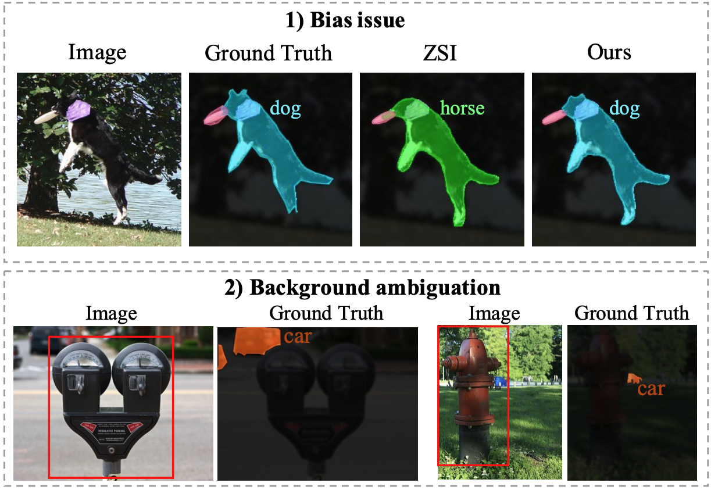
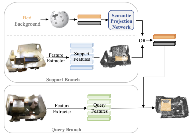
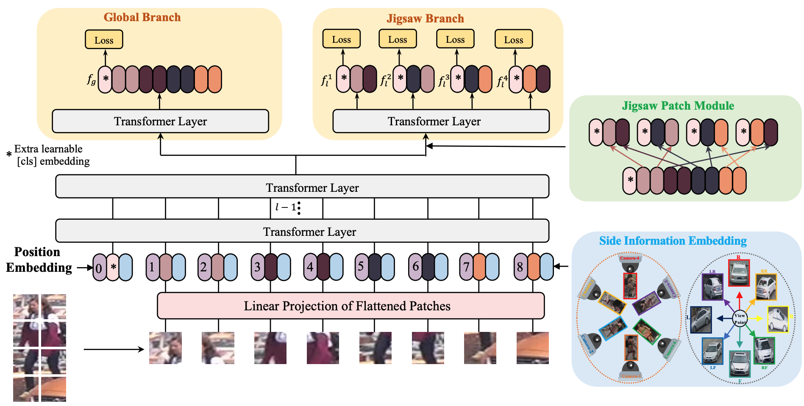

Shuting He
Ph.D. Candidate
Short Biography


Selected Publications [Google Scholar]
 |
MOSE: A New Dataset for Video Object Segmentation in Complex ScenesHenghui Ding, Chang Liu, Shuting He, Xudong Jiang, Philip H.S. Torr, Song Bai A benchmark dataset of co |
 |
Primitive Generation and Semantic-related Alignment for Universal Zero-Shot SegmentationShuting He, Henghui Ding, Wei Jiang IEEE Conference on Computer Vision and Pattern Recognition (CVPR), 2023. |
 |
Semantic-Promoted Debiasing and Background Disambiguation for Zero-Shot Instance SegmentationShuting He, Henghui Ding, Wei Jiang IEEE Conference on Computer Vision and Pattern Recognition (CVPR), 2023. |
 |
Prototype Adaption and Projection for Few- and Zero-shot 3D Point Cloud Semantic SegmentationShuting He, Xudong Jiang, Wei Jiang and Henghui Ding IEEE Transactions on Image Processing (TIP), 2023. |
 |
TransReID: Transformer-based Object Re-IdentificationShuting He, Hao Luo, Pichao Wang, Fan Wang, Hao Li, Wei Jiang IEEE International Conference on Computer Vision (ICCV), 2021. |
Selected Awards and Honors
- CVPR 2023 Doctoral Consortium, 13% Acceptance Rate
- 1st Place, IEEE CVPR 2021 AI CITY Challenge
- 1st Place, IEEE IJCAI iQIYI 2020 iCartoonFace Challenge
- 1st Place, IEEE ECCV 2020 Visual Domain Adaptation Challenge
Activities
- Conference Reviewer: CVPR, ICCV, ICASSP, ICME, etc.
- Journal Reviewer: IJCV, TIP, TNNLS, TMM, CVIU, etc.